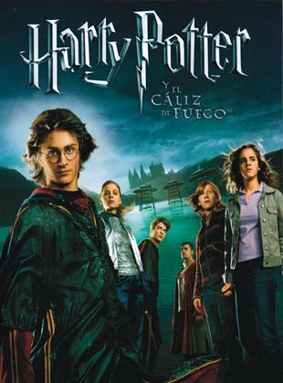
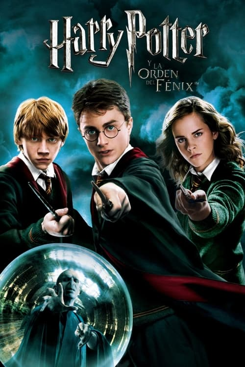
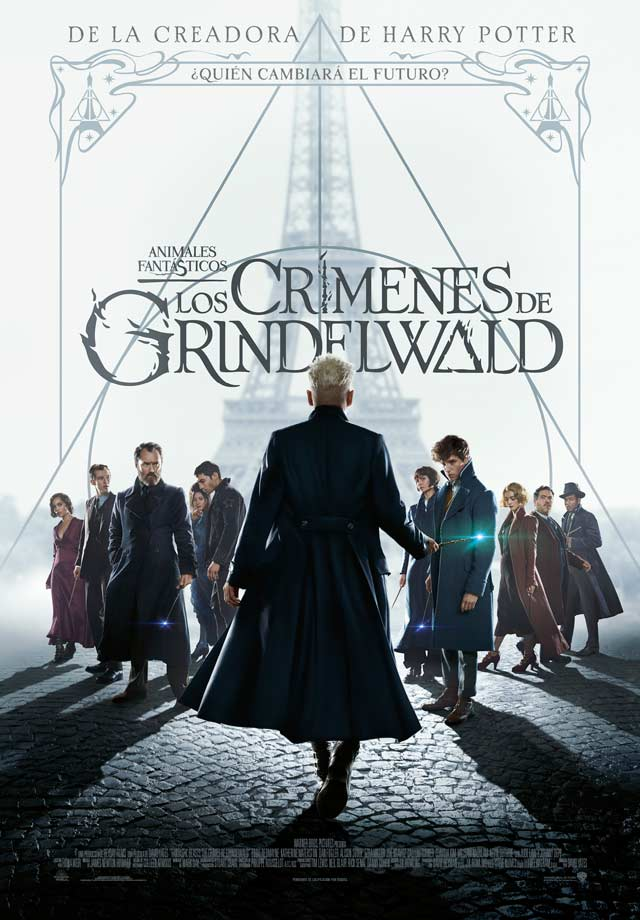

- Harry Potter
- Animales fantásticos
Harry Potter y la piedra filosofal

El día de su cumpleaños, Harry Potter descubre que es hijo de dos conocidos hechiceros, de los que ha heredado poderes mágicos. Debe asistir a una famosa escuela de magia, donde entabla amistades, que se convertirán en sus compañeros de aventura.
Ir al sitio oficialHarry Potter y la cámara secreta

Terminado el verano, Harry no ve la hora de abandonar la casa de sus odiosos tíos. Inesperadamente se presenta en su dormitorio Dobby, un elfo doméstico, que le anuncia que correrá un gran peligro si vuelve a Hogwarts.
Ir al sitio oficialHarry Potter y el prisionero de azkaban

El tercer año de estudios de Harry en Hogwarts se ve amenazado por la fuga de Sirius Black de la prisión de Azkaban. Al parecer, se trata de un peligroso mago que fue cómplice de Lord Voldemort y que intentará vengarse de Harry Potter.
Ir al sitio oficialHarry Potter y el caliz de fuego
Hogwarts se prepara para el Torneo de los Tres Magos, en el que competirán tres escuelas de hechicería. Para sorpresa de todos, Harry Potter es elegido para participar en la competencia.
Ir al sitio oficialHarry Potter y la orden del fenix
En su quinto año en Hogwarts, Harry descubre que muchos integrantes de la comunidad de magos no conocen la verdad acerca de su encuentro con Lord Voldemort. Debido a las enseñanzas inadecuadas de su profesora, Harry debe enseñar a sus compañeros para luchar por Hogwrts.
Ir al sitio oficialHarry Potter y el principe mestizo

Sexta entrega de la saga del joven mago, en la que Harry descubre un poderoso libro y, mientras trata de descubrir sus orígenes, colabora con Dumbledore en la búsqueda de una serie de objetos mágicos que ayudarán en la destrucción de Lord Voldemort.
Ir al sitio oficialHarry Potter y las reliquias de la muerte pt1

Harry, Ron y Hermione se marchan de Hogwarts para iniciar su misión más importante: tienen que destruir los horrocruxes, el secreto del poder y la inmortalidad de Voldemort, en los que el temido mago oscuro guarda los fragmentos de su alma.
Ir al sitio oficialHarry Potter y las reliquias de la muerte pt2

Un enfrentamiento entre el bien y el mal espera cuando el joven Harry, Ron y Hermione se preparan para una última batalla en contra de Lord Voldemort. Los amigos tienen que buscar los Horcruxes que mantienen inmortal al mago. Harry y Voldemort se encuentra en el Castillo Hogwarts para una pelea épica.
Ir al sitio oficialAnimales fantásticos y dónde encontrarlos

En 1926, el mago experto en zoología Newt Scamander hace una breve parada en Nueva York mientras viaja por el mundo. Jacob, un humano corriente, provoca por error que las criaturas escapen y se oculten por la ciudad. Scamander tendrá que atraparlas de nuevo, antes de que causen problemas.
Ir al sitio oficialAnimales fantásticos: Los crímenes de Grindewald
El joven mago, Newt Schamander, junto con sus compañeros Jacob Kowalski y las hermanas Tina y Queenie Goldstein, tendrá que hacer frente a las nuevas amenazas de Grindelwald. El mago ha escapado y está reuniendo a un grupo de seguidores.
Ir al sitio oficialAnimales fantásticos: Los secretos de Dumbledore

Ante una severa amenaza, el magizoólogo Newt Scamander lidera a un valiente grupo de magos y brujas que busca detener al malvado Gellert Grindelwald.